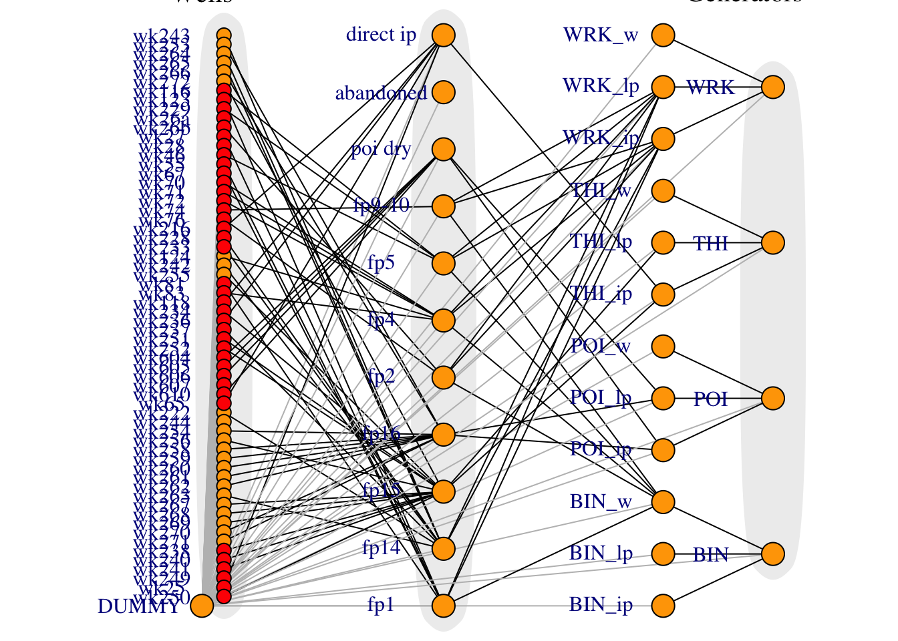

2 Data Handling
Data is extracted and cleaned using Python in simulation.ipynb. The Python notebook is also used to generate a rudimentary config file, but some things (network connectivity) are specified manually.
R is used to:
- Read raw data and config from Excel/CSV files
- Do additional pre-processing that depends on the data available
- Censor sensitive facility names
- Create a graph structure
- Make the data into a JAGS-readable format
2.1 Load Data
Reads data from several spreadsheets, including PI data. PI data is special because it has not been pre-processed. It requires additional filtering and basic pre-processing.
# read in config data
configsheets = excel_sheets(configpath)
for (sheet in configsheets) {
assign(sheet, read_excel(configpath, sheet))
}
stopifnot(!anyDuplicated(well_fp_map$well)) # each well cannot map to multiple flash plants
# read in PI data
PI <- read_excel(pipath, "From PI sheet", skip=1) %>%
rename(facility = Unit,
variable = X__1,
id = X__2,
description = X__3,
code = X__4) %>%
gather(key="datechar", value="value", -c(facility, variable, id, description, code)) %>%
mutate(date = as.Date(as.numeric(datechar), origin = "1899-12-30"),
value = as.numeric(value)) %>% select(-c(datechar, id)) %>%
mutate_if(is.character, tolower) %>%
mutate(value = as.numeric(value)) %>%
drop_na(value) %>%
filter(date >= as.Date("2017-11-01"), date < as.Date(prediction_date)) %>%
filter(!str_detect(variable, "condition|calc")) %>%
filter(str_detect(facility, "wk"))
extra_liq <- PI %>%
select(facility, date, variable, value) %>%
# filter(value>1e-4) %>%
filter(str_detect(variable, "plot|phase|whp|flow")) %>%
spread(key=variable, value=value) %>%
mutate(mf = pmax(`2phase flow`, `fp14 plot flow`, `fp15 plot flow`, `flow`, na.rm=T),
whp = pmax(`fp14 plot whp`, `fp15 plot whp`, `fp16 plot whp`, `whp`, na.rm=T),
source = "PI Database") %>%
select(well=facility, date, whp, mf, source) %>%
drop_na()
# read in regression data (plus extra)
regression_df = read_excel(regdatapath) %>% mutate(source="Well Tests")
dry_df = PI %>%
filter(str_detect(facility, "wk")) %>%
select(facility, date, variable, value) %>%
# filter(value>1e-2) %>%
group_by(facility, date) %>%
spread(key=variable, value=value) %>%
select(facility, date, `ip sf`, `actual massflow`) %>%
gather(key="key", value="mf", `ip sf`, `actual massflow`) %>%
ungroup() %>%
drop_na() %>%
rename(well=facility)2.2 Censor names
Censor well and flash plant names using a hash algorithm. Change the flag in setup to disable.
dry_df$well = censor(dry_df$well, "well")
extra_liq$well = censor(extra_liq$well, "well")
fp_constants$fp = censor(fp_constants$fp, "fp")
fp_gen_map$fp = censor(fp_gen_map$fp, "fp")
operating_conditions$well = censor(operating_conditions$well, "well")
regression_df$well = censor(regression_df$well, "well")
well_fp_map$well = censor(well_fp_map$well, "well")
well_fp_map$fp = censor(well_fp_map$fp, "fp")
production_curve_wells = censor(production_curve_wells, "well")
special_wells = censor(special_wells, "well")
tsplotwells = censor(tsplotwells, "well")2.3 Preprocessing
Generate metadata, such as which wells have which data sources, and translate facility names into unique integer IDs. Also creates dummy facilities for multiple purposes.
# combine with extra
regression_df = plyr::rbind.fill(regression_df, extra_liq)
regression_df = regression_df %>%
mutate(date_numeric = as.numeric(date - base_datetime)) %>%
mutate(date_numeric=ifelse(date_numeric>0, date_numeric, NA)) # remove dates before baseline
dry_df = dry_df %>%
filter(well %ni% unique(regression_df$well)) %>%
mutate(date_numeric = as.numeric(as.POSIXct(date) - base_datetime)) %>%
mutate(date_numeric=ifelse(date_numeric>0, date_numeric, NA)) # remove dates before baseline
well_fp_map = well_fp_map %>% select(well, fp) %>% drop_na()
# today_numeric = (Sys.time() - base_datetime) %>% as.numeric()
today_numeric = (today_datetime - base_datetime) %>% as.numeric()
# assign unique facility IDs
liq_wells = unique(regression_df$well) # aka production curve wells
dry_wells = unique(dry_df$well) # aka time series wells
map_wells = unique(well_fp_map$well) # any well mapped in config
well_names = unique(c(liq_wells, dry_wells))
fp_names = c(well_fp_map$fp, fp_gen_map$fp, fp_constants$fp) %>% unique()
fluid_types = c('ip', 'lp', 'w')
gen_names = gen_constants$gen %>% unique() %>% sort()
ip_gen_names = paste(gen_names, 'ip', sep='_')
lp_gen_names = paste(gen_names, 'lp', sep='_')
w_gen_names = paste(gen_names, 'w', sep='_')
dummy_gen_names = c(ip_gen_names, lp_gen_names, w_gen_names) %>% sort()
all_names = c('DUMMY', well_names, fp_names, dummy_gen_names, gen_names)
ids = 1:length(all_names)
names(ids) = all_names
# check data quality
no_data_wells = map_wells[!map_wells %in% c(liq_wells, dry_wells)] # see which ones we're completely guessing for
no_map_wells = c(liq_wells, dry_wells)[!c(liq_wells, dry_wells) %in% map_wells]
missing = data.frame(Wells = c(paste(no_map_wells, collapse=", ")),
row.names = c("Data available but no FP"))
print(xtable(missing, type = "latex",
caption=paste0("Potential data quality issues. ", names(ids)[71], " is known to be not connected, and ", names(ids)[31], " has an A/B pairing with ", names(ids)[32], "."),
label="tab:quality"),
file = "../_media/quality.tex")
# add names in data with IDs
regression_df = regression_df %>% mutate(well_id=ids[well])
dry_df = dry_df %>% mutate(well_id=ids[well])
operating_conditions = operating_conditions %>% mutate(well_id=ids[well]) %>% rename(whp_pred=whp)
fp_constants = fp_constants %>% mutate(fp_id=ids[fp])
gen_constants = gen_constants %>% mutate(gen_id=ids[gen]) %>% select(-gen)
well_fp_map = well_fp_map %>% mutate(well_id=ids[well], fp_id=ids[fp]) %>% select(-c(well, fp))
fp_gen_map = fp_gen_map %>% mutate(fp_id=ids[fp], gen_ip_id=ids[gen_ip], gen_lp_id=ids[gen_lp], gen_w_id=ids[gen_w]) %>% select(-c(fp, gen_ip, gen_lp, gen_w))
incomplete.fps = unique(well_fp_map %>%
filter(is.na(well_id)) %>%
mutate(fp = names(ids)[fp_id]) %>%
pull(fp))2.4 Graph
Work out which of the (now uniquely integer-identified) facilities flows to which. Then generates a graphic to check for correctness.
# create connectivity matrix. i flows to j
# wells to FPs
v = matrix(0, nrow=length(ids), ncol=length(ids))
v[1,-1] = 1
for (i in 1:nrow(well_fp_map)) {
id_i = well_fp_map[[i, 1]]
id_j = well_fp_map[[i, 2]]
v[id_i, id_j] = 1
}
# send ip/lp/w flows to dummy gens
for (i in 1:nrow(fp_gen_map)) {
id_i = fp_gen_map[[i, 1]]
for (j in 2:ncol(fp_gen_map)) {
facility_j = names(ids)[fp_gen_map[[i, j]]]
facility_dummy_j = paste(facility_j, fluid_types[j-1], sep='_')
id_j = ids[facility_dummy_j]
if (!is.na(id_j)) {
v[id_i, id_j] = 1
}
}
}
# dummy gens to gens
for (i in 1:nrow(gen_constants)) {
id_j = gen_constants$gen_id[i]
facility_j = names(ids)[id_j]
for (fluid in fluid_types) {
facility_dummy_i = paste(facility_j, fluid, sep='_')
id_i = ids[facility_dummy_i]
v[id_i, id_j] = 1
}
}
# convert form
m = matrix(0, nrow=nrow(v), ncol=max(colSums(v)))
rownames(m) = all_names
for (i in 1:nrow(v)) {
for (j in 1:ncol(v)) {
if (v[[i, j]]==1) {
m[j, sum(m[j,]>0)+1] = i
}
}
}
flows_to = function(well) {
return(names(ids)[m[well,]][-1])
}
# generate coordinates
dummy_locs = data.frame(name='DUMMY', x=-0.1, y=0)
well_locs = data.frame(name=well_names, x=0, y=seq(1, 1/(length(well_names)-1), length.out=length(well_names)))
fp_locs = data.frame(name=fp_names, x=1, y=seq(0, 1, length.out=length(fp_names)))
gen_dummy_locs = data.frame(name=dummy_gen_names, x=2, y=seq(0, 1, length.out=length(dummy_gen_names)))
gen_locs = data.frame(name=gen_names, x=2.5, y=seq(1/11, 10/11, length.out=length(gen_names)))
locs = rbind(dummy_locs, well_locs, fp_locs, gen_dummy_locs, gen_locs)
locs$id = ids[locs$name]
locs = locs %>% arrange(id)
g = graph_from_adjacency_matrix(v) %>%
set_vertex_attr('label', value=all_names) %>%
set_vertex_attr('x', value=as.vector(locs$x)) %>%
set_vertex_attr('y', value=as.vector(locs$y)) %>%
set_vertex_attr('label.degree', value=pi) %>%
as.undirected()
V(g)$size = ifelse(V(g)$label %in% well_names, 4, 8)
V(g)$color = ifelse(V(g)$label %in% dry_wells, "red", ifelse(V(g)$label %in% no_data_wells, "grey", "orange"))
E(g)$color = "black"
E(g)[which(tail_of(g, E(g))$label=="DUMMY")]$color = "grey"
# png("../_media/full_network.png")
# par(mar=c(0,3,0,0), family="Times")
# plot(g, vertex.label.dist=3,
# mark.groups = list(wells=ids[well_names], fps=ids[fp_names], gens=ids[gen_names]),
# mark.col = "#DDDDDD",
# mark.border = NA)
# text(c(-1, -0.3, 0.4, 0.9), 1.15, c("Wells", "Flash plants", "Dummy gens", "Generators"), cex=1.25)
# dev.off()
plot(g, vertex.label.dist=3,
mark.groups = list(wells=ids[well_names], fps=ids[fp_names], gens=ids[gen_names]),
mark.col = "#DDDDDD",
mark.border = NA)
The dummy node is necessary because when indexing a subset of flows that go into a node, this subset cannot be empty. The dummy node has zero mass flowing out of it.
2.5 Format Data
JAGS requires data to be real numbers, vectors or matrices in a named list. It can also impute NA values from a distribution. Data wrangling is a significant part of the work - potentially more than the actual model coding and the results analysis combined.
This code also centers some of the covariates so it does not have to be done in JAGS.
\[\begin{equation} x_\text{whp} \leftarrow x_\text{whp} - \overline{x_\text{whp}} \end{equation}\]regression_list = regression_df %>% select(well_id, whp, mf, date_numeric) %>% as.list()
dry_list = dry_df %>%
filter(date < prediction_date) %>%
rename(well_id_dry=well_id, mf_dry=mf, date_numeric_dry=date_numeric) %>% # use these in a different regression
select(well_id_dry, mf_dry, date_numeric_dry) %>% as.list()
operating_conditions_list = operating_conditions %>% arrange(well_id) %>% select(whp_pred) %>% as.list()
fp_constants_list = as.list(fp_constants)
gen_constants_list = as.list(gen_constants %>% select(gen_id, factor))
facilities = data.frame(id=ids) %>%
left_join(operating_conditions %>% rename(id=well_id) %>% filter(id %in% ids) %>% select(-well), by='id') %>%
left_join(gen_constants %>% select(factor, id=gen_id), by='id') %>%
left_join(fp_constants %>% rename(id=fp_id), by='id') %>%
filter(id %in% ids) %>% # in case extras specified in data
mutate(mf_pred=NA) %>%
mutate(n_inflows=colSums(v))
well_ids = ids[well_names]
liq_well_ids = ids[liq_wells]
dry_well_ids = ids[dry_wells]
fp_ids = ids[fp_names]
ip_gen_ids = ids[ip_gen_names]
lp_gen_ids = ids[lp_gen_names]
w_gen_ids = ids[w_gen_names]
gen_ids = ids[gen_names]
# force all mass to IP steam
dry_fps = c("poi dry", "direct ip")
dry_fp_ids = ids[dry_fps]
facilities$hf_ip[facilities$id %in% dry_fp_ids] = 10
facilities$hfg_ip[facilities$id %in% dry_fp_ids] = 10
facilities_list = facilities %>% select(-id) %>% as.list()
# experimental TS data matrix for dry wells
ar_order = 1
empty = setNames(data.frame(matrix(ncol = length(all_names), nrow = 0)), all_names)
drymatrix = dry_df %>%
select(well, date_numeric, mf) %>%
spread(well, mf) %>%
select(-date_numeric)
drymatrix = empty %>%
full_join(drymatrix) %>%
as.matrix()
ar_well_ids = which(complete.cases(t(drymatrix[1:(ar_order+1),])))
ar_wells = names(ids)[ar_well_ids]
# which wells can we not use AR for
dry_no_ar_wells = dry_wells[!dry_well_ids %in% ar_well_ids]
dry_no_ar_well_ids = ids[dry_no_ar_wells]
# insert production curve predictions
stopifnot(all(tsplotwells %in% dry_df$well))
tsplotwells = ar_wells
days_since_last = as.integer(today_datetime - as.POSIXct(max(dry_df$date)))
prod = expand.grid(whp_prod=seq(6, 16, length.out=10),
well_id_prod=ids[production_curve_wells])
ts = expand.grid(date_numeric_ts=seq(min(dry_df$date_numeric), max(dry_df$date_numeric)+days_since_last, length.out=10),
well_id_ts=ids[tsplotwells])
prod_list = prod %>% as.list
ts_list = ts %>% as.list
# extend matrix for prediction
drymatrix = rbind(drymatrix, matrix(NA, nrow=days_since_last, ncol=ncol(drymatrix)))
# combine into one list
data = c(regression_list, dry_list, facilities_list, prod_list, ts_list,
list(well_ids=well_ids, liq_well_ids=liq_well_ids,
dry_well_ids=dry_well_ids, dry_no_ar_well_ids=dry_no_ar_well_ids,
fp_ids=fp_ids,
gen_ids=gen_ids, ip_gen_ids=ip_gen_ids, lp_gen_ids=lp_gen_ids, w_gen_ids=w_gen_ids,
today_numeric=today_numeric, m=m, dummy=1,
ts=drymatrix, ts_ar=drymatrix, ts_ema=drymatrix, ar_well_ids=ar_well_ids))
# data$whp_pred[is.na(data$whp_pred)] <- mean(data$whp_pred, na.rm=T)
# center covariates
mean_whp <- mean(data$whp, na.rm=T)
mean_date_numeric <- mean(data$date_numeric, na.rm=T)
data$whp_c <- data$whp - mean_whp
data$whp_pred_c <- data$whp_pred - mean_whp
data$whp_prod_c <- data$whp_prod - mean_whp
data$date_numeric_c <- data$date_numeric - mean_date_numeric
data$today_numeric_c <- data$today_numeric - mean_date_numeric
data$date_numeric_dry_c <- data$date_numeric_dry - mean_date_numeric
data$date_numeric_ts <- data$date_numeric_ts - mean_date_numeric
pidataplot = ggplot(regression_df %>% filter(source=="PI Database"), aes(x=whp, y=mf, color=well)) +
geom_point() +
labs(title=paste("PI Regression Data from", min(extra_liq$date), "to", max(extra_liq$date)),
x="Well-head pressure (bar)",
y="Mixed-phase mass flow (T/h)",
color="Well") +
guides(color=guide_legend(ncol=2)) +
ggsave('../_media/pi_data.png', width=24.7, height=12, units='cm')
ggplotly(pidataplot)